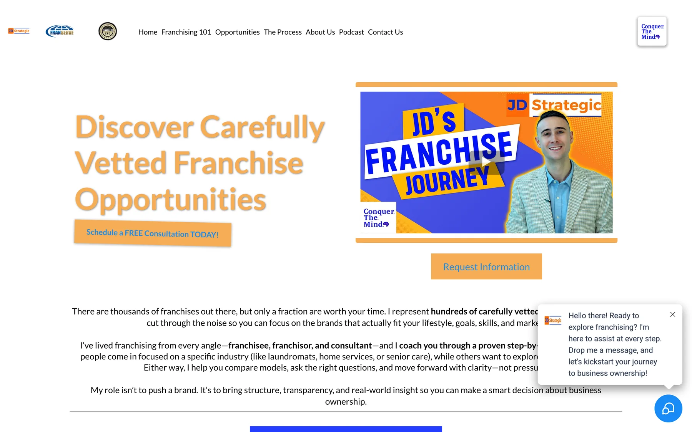
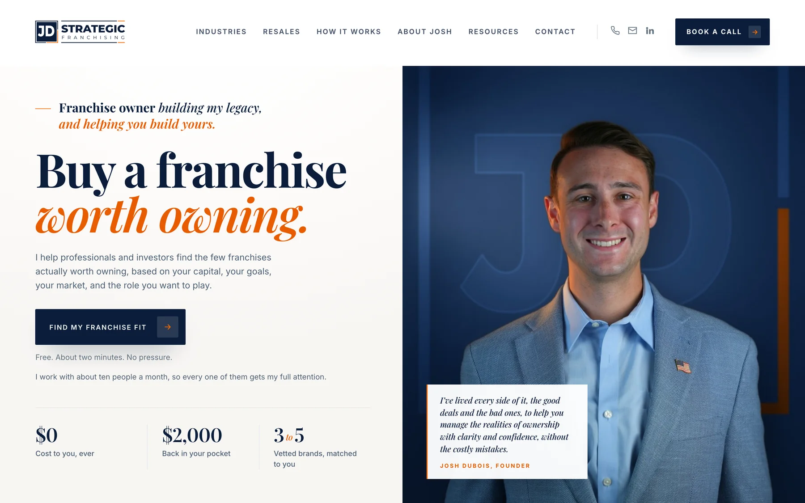
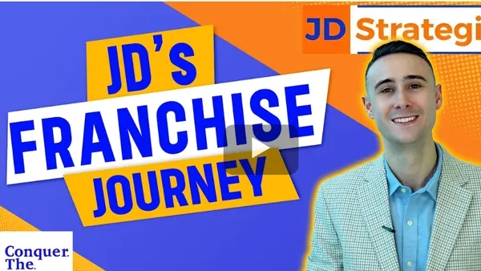
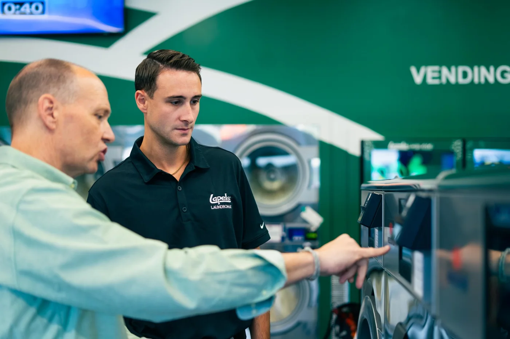

JD Strategic Franchising · Website Redesign
His website looked like a template. Now it looks like the expert he is.
We rebuilt Josh DuBois's logo, headlines, photos and pages, so a franchise buyer trusts him before the first call.


Logo
A blurry image file. Now a sharp navy and orange logo at any size.
Headline
Pale orange and generic. Now dark, readable and says what he does.
Photos
A YouTube thumbnail. Now real photos of Josh and his business.
How we fixed it, step by step.
Brand first, then the pages. Old on the left, new on the right.
Refined the colors
Four competing colors became one navy and one orange.
Redrew the logo
The blurry image became a clean vector that stays sharp everywhere.
Rewrote the headline
A vague line in a default font became a clear promise in a confident serif.
Showed the real business
Graphics came out. Real photos of Josh working with owners went in.


Then we rebuilt the whole site.
This is the finished homepage, top to bottom. It scrolls by itself.
Now it works on a phone.
- One clean columnEach section stacks in reading order.
- Text you don't have to zoomHeadlines and paragraphs are sized for a phone.
- Forms that use the whole screenAlmost no wasted padding around the fields.
- Booking right on the pageThe calendar opens without leaving the site.
Before
After